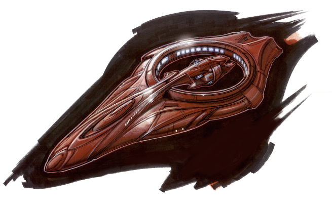
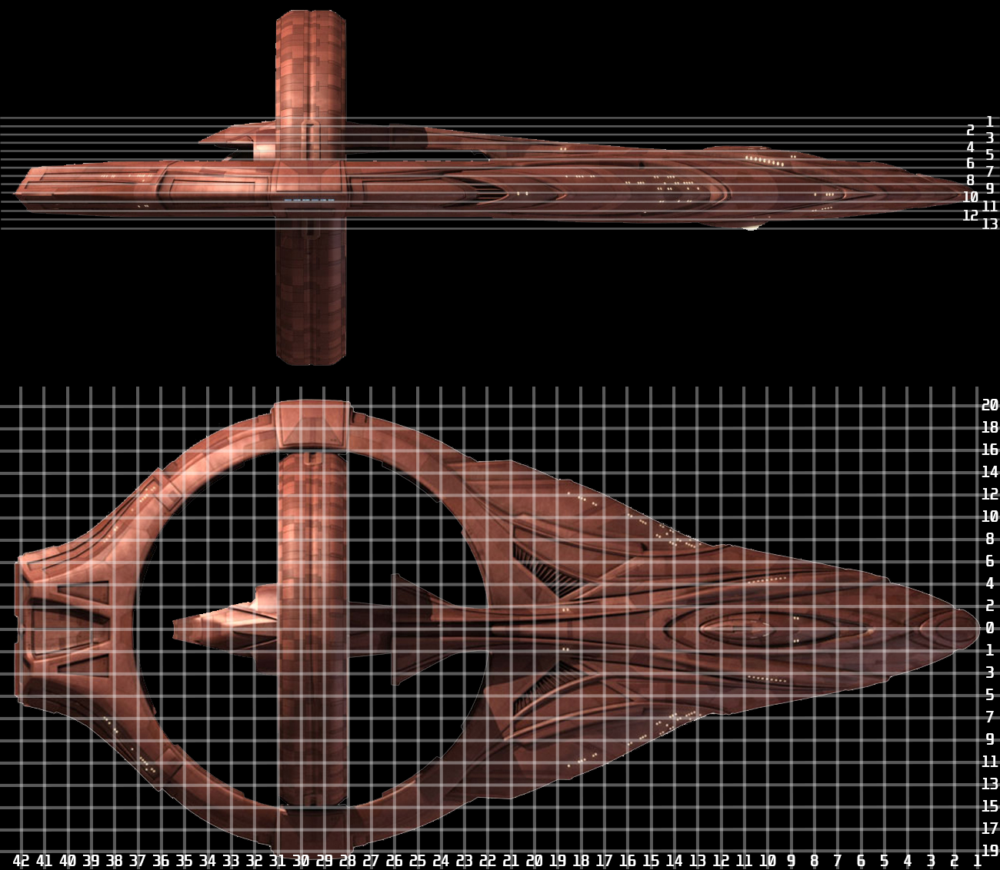

Wuh Hashan Vulkansu¶
Description¶
The Vaankara, Vulcan spaceship long-thought lost to the Delphic Expanse re-appears on long-range sensors traveling at high warp towards a Romulan colony. All attempts to contact the vessel have failed, though that is to be expected as the Vulcan High Command had received a transmission from the Vaankara showing the crew killing each other violently as a result of Trellium-D induced psychosis. The ship is travelling slightly too fast for the Endeavour's Warp Five engine to keep up with, but it should be possible to match velocities just long enough for a small away team to transport aboard and shut down the Vaankara's warp engines before it crosses into Romulan territory.
GM Guidance
Note that this mission is very open ended in terms of player sequence. Part of the experience will be an exploration of the Vaankara, and as a result, the exact sequence of visited locations is not necessarily fixed. GMs are encouraged to use the provided tables of Compartment Hazards to generate interesting rooms.
If a more linear experience is desired, particularly for simplicity, the players could be provided with additional information about the state of the Vaankara ahead of time. For example, the early scans of the Vaankara (either by the players or by the Tellarite vessel that detected it) could have allowed the Vulcan Space Agency to prepare a plan for the away team to follow. One such sample plan is provided in Appendix B: Sample VSA Plan.
The mission scenes begin at Scene 0: Introduction. The following sections provide useful information for GMs on how to run a mission aboard the Vaankara.
Directives¶
| Directive |
|---|
| Do Not Reveal Information About the Romulans. |
| Do Not Enter Romulan Space |
| Prevent the Vaankara from Entering Romulan Space |
| Recover the Vaankara's Flight Data Recorder |
| Secure the Vaankara for Salvage by the Vulcan Space Agency |
| If the Vaankara cannot be secured, complete Additional Objectives |
Additional Objectives¶
These additional objectives are requests from the Vulcan High Council. Should the Vaankara need to be destroyed to prevent it from entering Romulan Space, the retrieval of the following items should be prioritized.
| Objective |
|---|
| Retrieve any data collected about the Delphic Expanse and it's spatial anomalies |
| Retrieve any medical data and viable samples collected on Trellium-D |
| Retrieve any scientific data collected on Trellium-D |
| Recover the Vaankara's IDIC Plaque from the Bridge |
Why Not Simply Destroy the Vaankara?¶
Some players may wonder why they shouldn't simply destroy or disable the Vaankara after closing within weapons range. While this would effectively solve the core issue of violating Romulan Space, this is effectively the quickest way to a "Bad Ending" for this mission. The Vaankara is extremely damaged, and it is unlikely to be able to withstand any additional weapons fire. Indeed, the ship's Structure is a single breach from complete destruction, and as that is the most likely hit location, the risk is too great.
Destroying the Vaankara without ensuring that there are in fact no survivors and without even an attempt to salvage the craft is certain to cause a political incident with the Vulcan High Council. Starfleet Command will not look kindly upon officers that shoot first and ask questions later, especially where Coalition allies are concerned. The players would find themselves court martialed for dereliction of duty at a minimum, possibly multiple counts of murder if the Vulcan salvage vessel finds the corpses of recently killed Vulcans amongst the wreckage.
All of this information would be known by the players' characters, but the GM may need to remind players. It is not Starfleet's policy to open fire upon a defenseless vessel without cause, and Starfleet has no use for officers that feel otherwise.
GM Guide to the Vaankara¶
VSA Vaankara¶

The Vaankara is a D'Kyr-Class, a multi-purpose cruiser more typically suited to combat operations than scientific or exploratory missions, though given the superior level of Vulcan technology D'Kyr-Class' scientific facilities easily rival the NX-Class'.
Vessel Coordinates
While deck is well understood as the Y-axis measure for a ship, there
hasn't been a clear way to refer to the X and Z positions. Bulkhead and
Section are sometimes used, albeit inconsistently. For this and other
missions, the recommended scheme is as follows:
-
Deck : Typical usage. Deck 1 is the highest deck, with increasing numbers descending through the ship. A compartment that spans multiple decks uses the lowest deck. For example, Main Engineering aboard an NX-Class vessel spans Decks D and E, so it would be labeled as Deck E.
-
Frame : A vertical plane, aligned with the 'ribs' of the ship, that describes the position of a compartment from fore to aft. Frame 1 is the foremost position, with increasing numbers aftward through the ship. The foremost bulkhead of a compartment defines the frame number. For example, a compartment spanning across Frames 10, 11, 12 would bear frame number 10.
-
Section : A vertical plane perpendicular to the 'ribs' of the ship which describes the distance from the centerline. Compartments that span the centerline have Section 0. Compartments completely port of the centerline have even section numbers (2, 4, 6), while compartments starboard of the centerline have odd section numbers (1, 3, 5). Increasing numbers denote a greater distance from the centerline, matching the 'runners' on the ship's keel. The center-most section number is used. For example, Main Engineering on an NX-Class vessel would use Section 0, as it spans the center, while the Captain's Ready Room would have Section 1, as it lies entirely to starboard of the centerline.
-
Usage : One capital letter denoting the primary use of the compartment. The following table is borrowed heavily from the Naval equivalents.
+---+----------------------------------------------+ | A | Storage (Cargohold, Issue Rooms, Storerooms) | +---+----------------------------------------------+ | C | Control (Bridge, Comm Center, Armory) | +---+----------------------------------------------+ | E | Engineering (Pumps, Reactors, Machinery) | +---+----------------------------------------------+ | F | Fuel (Deuterium/Antimatter Tanks, Propellant)| +---+----------------------------------------------+ | K | Hazardous (Chemical/Radioactive Storage) | +---+----------------------------------------------+ | L | Living Quarters | +---+----------------------------------------------+ | M | Ammunition (Torpedo Storage/Transport) | +---+----------------------------------------------+ | Q | Misc (Unmanned, Galley, Laundry, Wiring Trunk)| +---+----------------------------------------------+ | T | Jefferies Tube | +---+----------------------------------------------+ | V | Void (Empty Spaces) | +---+----------------------------------------------+ | W | Water Tank | +---+----------------------------------------------+
This scheme is basically the same one used aboard naval vessels, and is
relatively easy to parse for comparative purposes. For example, if players
are in a compartment labeled E-120-4 and need to travel to another
labeled D-100-5, they would know to ascend one deck (E to D), head
forward (120 is aft of 100), and cross over to the starboard side of the
centerline (4 is even and therefore port, 5 is the equivalent section to
starboard).
The Vaankara is composed a flattened, conical hull that flares out around a circular warp nacelle at the aft section. The circular nacelle can be rotated into the plane of the primary hull for combat. A detachable Tal'Kyr warp-capable support vessel docks to a hull extension inside the circular warp nacelle. The vessel consists of thirteen (13) decks. The table below contains a non-exhaustive list of major compartments and their approximate locations on the vessel.
Vaankara Main Compartments¶
 Tip: Open the image in a new tab or download it for a better view.
Vaankara Main Compartment Table
| Compartment | Designation | Note |
|---|---|---|
| Bridge | 5-10-0-C | Vented to space, heavily irradiated from nebula dust. |
| Auxiliary Control Room | 10-40-0-E | Flooded with hexafluorine (toxic) gas. |
| Primary Computer Core | 8-5-0-C | Over pressurized with fire suppressant gas, explosion hazard. |
| Sickbay | 5-15-0-Q | Infested with Vaankara crew. Contains records of Trellium-D psychosis. |
| Main Engineering | 10-13-0-E | Heavily irradiated and flooded with drive coolant. |
| Warp Nacelle Access Shafts | 10-29-17-T and 10-29-18-T | Two shafts leading to the rotating nacelle. |
| Warp Nacelle Control Room | Bottom of Nacelle Ring | Contains Vaankara crew members. |
| Antimatter Storage Control Room | 12-20-9-F and 12-20-10-F | Corrosive atmosphere from damaged ejection system. |
| Shuttlebay | 7-18-0-A | Vented to space. All shuttles are missing. |
| Tal'Kyr Vessel Dock | 4-23-0-Q | Present, but docking clamps are jammed and the airlock is sealed shut. |
| Armory | 8-4-0-C | Nearly all the weapons are missing or discharged. |
| Transporter Room 1 | 6-12-3-Q | Critically damaged. Shows signs of an obvious firefight. |
| Transporter Room 2 | 11-19-10-Q | Functional but unpowered. Minor damage. |
| Mess Hall | 9-1-0-Q | Contains a large number of dead crewmen. |
| Quarters | Various | Crew quarters make up a large portion of the front hull section. |
| Astrophysics | 7-16-7-Q | Contains research on Trellium-D and spatial anomalies from the expanse. |
| Fore Shield Emitters | 10-7-5-E and 10-7-6-E | Random electrical discharges from damaged power grid. |
| Navigational Deflector | 13-11-0-Q | Misaligned, occasional radiation burst as cosmic dust impacts hull. |
Players should have rough schematic diagrams for the vessel from the Vulcan Database, so it is not unreasonable for them to pick a good beam-in point. All of the key compartments have an environmental effect that should prevent players from simply shutting down the warp drive.
An additional Appendix A: Tables of Compartment Complications is available at the end of the module for quick reference. This can be used to create or substitute hazards throughout the ship.
Navigating Around the Vaankara¶
Moving between compartments is likely to be fraught with danger. The Vaankara crew will attack the away team on sight, and the various environmental hazards should provide quite the challenge for players.
To simulate the difficulty involved in traversing the ship, players should encounter about one or two hazards whenever they transfer between regions of the ship. If the traversal is short enough or the path has already been traversed, the hazards should be skipped to prevent burnout from the players.
The GM can make the journey more dynamic by presenting a choice of hazards the away team can face.
Presenting Choices
According to the Vaankara deck plans, there are two possible paths from the Bridge to Main Engineering: via the turbolifts and corridors, or via jefferies tubes. The former is more likely to attract the attention of the Vaankara crew, and face atmospheric hazards like pressure differentials or flooded compartments. The latter path, via jefferies tubes, is less likely to encounter the crew, but significantly more likely to face energy hazards, especially plasma fires and electrical discharges from co-located EPS conduits.
The choices need not be mutually exclusive, and can allow for a backup option should the chosen method fail to provide safe passage. A journey that begun via the turbolifts could quickly require a trek through jefferies tubes if the lift becomes stuck between decks.
Additionally, players should be given the option to change their minds once they are presented with a specific hazard. Away teams can and often need to backtrack and find an alternate route in unknown environments, and flexibility and adaptability to changing conditions is a mark of a good officer.
Taking Control of the Vaankara¶
The Vaankara is on an automated course, determined by the ship's computer to the best of its ability to meet the heading locked by the ship's navigator before she scrambled the navigational subroutines. As the away team is not authorized to use the Vaankara's systems, it is not a simple matter of just directing the computer to shut down the warp engines. The away team will need to manually collapse the Vaankara's warp field, a dangerous proposition given that the ship's structural integrity is questionable at best.
There are several ways the Vaankara can be stopped. The primary impediments to the away team's mission are the various dangers aboard the Vaankara, ranging from the vessel's compromised environment to the psychotic surviving crew members.
From the Endeavour, the crew can attempt a Insight + Engineering Task assisted by the ship's Sensors + Engineering with a Difficulty of 2 to determine the state of the Vaankara's systems. If the Task is successful, the engineering analysis reveals the hazards located on the Bridge, Auxiliary Control Room, and Main Engineering as denoted in the Vaankara main compartments section. The same Task additionally reveals that the Vaankara is liable to break up when it drops out of warp if the structural integrity is not reinforced prior to collapsing the warp field. Additional Momentum spends to Obtain Information can reveal the following information:
- The Tal'Kyr support vessel appears to be in decent condition, as it has been powered down and sealed off from the main vessel.
- The rotating warp nacelle shows signs of fatigue and stress, it could break off from the vessel with little warning.
- Several emergency bulkheads have been lowered, sealing off parts of the ship that have been exposed to vacuum.
- A small shuttlecraft appears to have smashed into the rear hull section. The other three shuttles are missing, and the bay is depressurized.
- Repeatable: The location of a structural weak spot that can be reinforced using internal force fields.
Once aboard the Vaankara, a similar Insight + Engineering Task with a Difficulty of 2 can reveal the same information, if it was not acquired before boarding.
The following table shows the locations of structural weak points, as well as the Task needed to reinforce it. There is no ordering requirement for these Tasks, but they are all located in separate compartments of the ship.
| Weak Point | Location | Task |
|---|---|---|
| Warp Nacelle Access Shafts | 10-29-17-T and 10-29-18-T | Daring + Engineering Difficulty 3 Task to erect emergency forcefields around the ring clamps. |
| Navigational Deflector | 13-11-0-Q | Control + Science Difficulty 2 Task to re-align the navigational deflector. |
| Fore Shield Emitters | 10-7-5-E and 10-7-6-E | Control + Engineering Difficulty 2 Task to reinforce the hull with shields. |
Once the weak points have been taken care of, the warp field can be collapsed in several ways, each with its own risks and benefits. The following table is not a comprehensive list of possibilities, but simply lists out some options. Players should be encouraged to come up with their own method. Extended descriptions are available after the table. For suggested task sequences for these plans, refer to Appendix B: Sample VSA Plans.
| Method | Required Compartments |
|---|---|
| Shut Down Warp Core | Main Engineering or Auxiliary Control Room, Warp Nacelle Control |
| Use Tal'Kyr to Collapse Warp Field | Tal'Kyr Dock, Bridge or Warp Nacelle Control |
| Eject Antimatter Pods | Main Engineering or Auxiliary Control Room, Antimatter Storage Control |
Securing a Main Compartment¶
As the Vaankara main compartments section shows, many of the mission critical compartments are inaccessible to the away team upon beaming in. None of these hazards are meant to be impossible to correct, but they will require some degree of ingenuity and luck to come up with a solution.
For example, suppose that the away team wishes to clear out the drive coolant preventing them from accessing Main Engineering.
They could attempt to override the security lockout at the computer terminal by the entrance to vent the compartment. This would be a Control + Security Extended Task with a Difficulty of 2, Resistance 2, and a Work Track of 12. Two (2) Breakthroughs are required to succeed. This option would require the away team to pass through corridors patrolled by the Vaankara crew. The players will need to work on the panel while under attack, which is not an ideal case.
Alternatively, the away team could attempt to access the environmental controls for Main Engineering inside a jefferies tube, the entrance of which has a plasma fire that must be put out. This is a Daring + Security Task with a Difficulty of 4, and a Complication Range of 17-20. While significantly harder to pull off, the away team is unlikely to come under attack as the Vaankara crew tend to shun the jefferies tubes. The away team could attempt this route first, but failing to put out the plasma fire
In either event, clearing out the environmental hazard does not necessarily secure the compartment. The Vaankara crew may notice the away team's activity and mount an attack. Despite their psychosis, the crew have not lost their intelligence, and are perfectly capable of using the Vaankara's systems against the away team. For example, they could release a toxic substance through the ventilation system, or they could attempt to overload a nearby EPS conduit to blow a hole through the bulkhead, allowing them access into the compartment.
As a rule of thumb, the players should feel a constant pressure to move on and avoid staying in any one location for too long. A lone crew member might discover them within minutes, and create enough of a ruckus to attract several others, which can quickly outnumber and overwhelm the away team.
Introduction¶
Scene 0
Captain's Log: Stardate 2161.8
Four hours ago, Starfleet received an emergency request from the Vulcan High Council, requesting that the Endeavour be immediately dispatched to the nearby Gamma Hydrae system along the disputed Romulan Border. A Tellarite deep-space survey vessel picked up the Vaankara, a Vulcan vessel lost in the Delphic Expanse four years ago, on long range sensors seemingly heading directly for Romulan Space at approximately Warp 5.8. All attempts to contact the Vaankara were unsuccessful, though given the ship's final transmission that is perhaps to be expected.
The Tellarite ship was unable to catch up to the Vaankara, but fortunately the captain was able to determine the ship's approximate heading before it disappeared from their sensor range. Based on the Vulcan's best estimates, the Vaankara will pass by the Cheron system in about ten days, where the Romulan Star Empire has established a colony just outside Coalition sensor range.
Whatever the reason for the Vaankara's mysterious heading, the Romulans are sure to consider even a minor breach of their borders an act of aggression. To have a Vulcan vessel pass by one of their colonies could pull Vulcan and the Coalition into a pointless war. It is our mission to ensure that the sovereignty of the Empire's borders is respected. The Endeavour is to set an intercept course that will bring us within transporter range of the Vaankara as it passes through Gamma Hydrae. Though we will be unable to maintain speed with the Vulcan ship for long, my engineer assures me the Endeavour can sustain Warp 5.8 for no less than 90 seconds, just enough time to beam aboard an away team.
It will be up to them to disable the Vaankara's warp drive, or failing that, activate the ship's self-destruct and eject in one of the escape pods before it crosses into Romulan space approximately four hours after our intercept. A Vulcan salvage vessel is scheduled to rendezvous with us within 48 hours. Should the away team succeed in safely stopping the Vaankara, they will take over the somber task of finally laying this ghost ship to rest.
Intercept with the Vaankara¶
Scene 1
The Vaankara appears at extreme sensor range approximately 30 seconds before the Endeavour accelerates to Warp 5.8, a speed it can only hold for an extremely short period of time without suffering catastrophic damage to its engines.
The away team should already be at the transporter pad. Up to six (6) crew members can transport in a single cycle. If there are fewer than six players, they may choose additional members of the crew (NPCs or supporting characters) to accompany them, at the cost of one (1) Crew Support per character. A player may switch to control one of these additional crew members at the start of a scene for free, but cannot use Crew Support to bring in additional characters that did not transport over. If there are more than six (6) players, you may rationalize the greater transport capacity as a volumetric transport rather than an entity-transport, but increase the complication range for the transport Task by two (2) as the Endeavour's transporter is not meant to transport humans in that mode.
Players should have access to the Vulcan Database, which will enable them to select a suitable beam in location. They may be tempted to choose an obvious compartment, like the Bridge or Main Engineering, but those compartments have highly hazardous environments that will necessitate an immediate evacuation (see the Vaankara compartment table). A Reason + Science or Medicine Task assisted by the ship's Sensors + Science with a Difficulty of 1 will reveal that major portions of the ship are badly damaged and all critical areas of the ship show hazardous conditions. For each Momentum spent to Obtain Information, the players can get information about one compartment or zone aboard the Vaankara from the the Vaankara compartment table. Note that the crew members should not be recognized by the sensors as Vulcan, but should read as indeterminate humanoid life-forms.
As soon as the Vaankara enters the transporter window, the away team is on a timer to complete the transport. The window will last just 90 seconds, and the transporter takes at least 30 seconds to cycle. The Transporter Task is a Control + Engineering Task with a Difficulty of 2 and a Complication Range of 17+, assisted by the ship's Sensors + Engineering. This takes into account the +1 Difficulty increase due to the Vaankara's non-functional Transporter Pad, and the -1 Difficulty decrease from performing the Task from the Transporter Room. The Transporter Task can Succeed at a Cost.
Transporter Complications
-
The away team beams aboard the wrong location in the Vaankara.
- Good locations include the Mess Hall, Shuttle Bay, Crew Quarters, Cargo Bays, or anywhere else that is far from the Bridge or Engineering.
-
The away team is transported to different locations aboard the Vaankara.
- Consider putting the crew on separate decks, or possibly across two sides of a bulkhead or jefferies tube.
-
The away team's equipment is damaged in the transport, the result of an automatic safety feature in the pattern buffer in order to protect the organic matter from losing integrity.
-
The away team beams into a breached corridor, sealed off from the rest of the ship by emergency bulkheads. They must venture outside to find another entry point.
-
The beam-in causes a power surge in the Vaankara's EPS grid that begins flooding the compartment with radiation, forcing the away team to abandon any large equipment or spare parts they may have brought in order to reach a safe zone.
Intercept with the Vaankara (Alternate)¶
Scene 1 (Alternate)
Note that as it is critical that the away team make it aboard the Vaankara, it is strongly suggested that the Transporter Task be allowed to Succeed at a Cost. If a more dynamic introduction scene is desired, consider using a Gated Task for the beam-in.
Aside from the optional Plot an Intercept with the Vaankara, all Tasks should be able to Succeed at a Cost. Non-optional failed Tasks should increase the Difficulty of the next Task downwards in the sequence. For example, Close to Transporter Range and Locate a Suitable Beam-In Site would both increase the Difficulty of Set the Transporter to Automatic Cycle if failed. If the final Task is failed, consider using one or more of the Transporter Complications from the standard Intercept description.
If too many Tasks are failed, it is possible that the ship is unable to maintain distance with the Vaankara. This could lead to a new set of Engineering-related Tasks in order to squeeze additional speed out of the engines to allow a second attempt.
Ultimately, if too many Tasks are failed, it may come to pass that the crew has no other option but to abandon the boarding plan and proceed with the destruction of the Vaankara. Though not an positive outcome, as the destruction of the ship could result in severe consequences for both the player characters specifically and Starfleet in general, the crew did make their best attempt to intercept and salvage the Vaankara, a fact that won't be lost on the Vulcans or Starfleet Command.
If the attempt to board the Vaankara fails, consider playing out the court martial.
Aboard the Vaankara¶
Scene 2
Once aboard, the away team will receive a signal from the Endeavour that it has reduced speed to the safe maximum of Warp 5.4. From this moment on, the away team is on its own and must complete the mission, otherwise they are sure to be captured or killed by the Romulans upon entering their territory.
The Vaankara is in a terrible state. Every compartment has some problem, ranging from lack of artificial gravity to drive plasma leaks to extreme temperature variations. The player characters will need to stay in their EV suits throughout their mission, at least until they can secure and repair some compartment of the ship.
An environmental scan of the Vaankara, using a Reason + Medicine Task with Difficulty 1, reveals that the atmosphere (where it exists) is heavily contaminated with Trellium-D, a material known to protect against the effects of the spatial anomalies found in the Delphic Expanse.
Additional information may be obtained by spending Momentum.
- Several clusters of organic matter consistent with Vulcan corpses are detected on the scan, though the readings are unclear as to exactly how many bodies given the state of decomposition. Some of the clusters appear to be moving, though the readings are highly distorted, so it is possible that it is a sensor ghost.
-
The Vaankara's atmosphere contains large quantities of organic volatiles consistent with organic acids and solvents. Several compartments show damage to the bulkheads where these compounds have eaten away at the duranium alloys favored by Vulcan construction.
-
Many of the walls have splatters consistent with sprays from blunt impacts. The splatters are old and dried out, but unmistakably rich in copper compounds typically found in Vulcanoid blood. The scans show trace amounts of the same organic acids and solvents, though in such minute quantities as to possibly be due to cross contamination over the years.
As the Enterprise discovered, Trellium-D is extremely toxic to Vulcanoids, even brief exposure to minute quantities can lead to serious neurological damage. With the quantities found aboard the Vaankara, it's obvious that the crew would have quickly succumbed to Trellium induced psychosis and murdered each other.
Unbeknownst to the players, the crew on the Vaankara is not entirely dead. Of an original crew complement of 147, there are 53 who did not perish in the outbreak of rage and violence that marked the ship's last transmission. Those so-called survivors have become shuffling husks completely devoid of any semblance of humanity. They are the Ghosts of the Vaankara, and they are consumed by an unquenchable rage.
Depending on where the away team beamed-in, it is possible that the putrid, dismembered bodies of the Vaankara's crew can be found in the same compartment. A Reason + Medicine Task with Difficulty 1 will show that they died from injuries sustained during an all-out brawl. It is clear that the violence did not stop with their deaths, as all the corpses show signs of post-mortem dismemberment and even cannibalism.
At this time, it is up to the away team to determine the best course of action. The Vulcan High Council has requested a few additional objectives for the away team to complete should the recovery efforts prove unsuccessful. Obviously these additional objectives are automatically met if the Vaankara is recovered, but they might provide some early destinations for the away team to visit.
If the away team is unsure of how to proceed, remember that as well-trained Starfleet officers, they should have a reasonable idea of how to disrupt an operational warp engine, if only from being told what not to do. Any of the Sample VSA Plans should reasonably occur to any member of the away team, even if it doesn't occur to the players.
Finale¶
Vaankara Successfully Drops out of Warp¶
However it happens, the Vaankara's suicidal course has finally been halted. The Endeavour will soon catch up to the Vaankara, and the Vulcan recovery vessel, the V'Laarrun, will rendezvous within the day. The ship and its unfortunate survivors will finally return home to Vulcan. The crew members are too far gone from exposure to Trellium-D to ever be successfully re-integrated into society, but perhaps they will find a measure of peace at long last.
Vaankara Destroyed¶
The Vaankara's signal fades out on sensors as the ship is torn apart. Any remaining antimatter quickly detonates, ripping the hull apart from the inside and instantly killing anyone aboard. The V'Laarrun, the Vulcan recovery vessel, and the Endeavour have the somber task of combing through the wreckage in the faint hopes that something or someone survived the destruction of the ship, though after several hours of fruitless work the search is called off. There is nothing left but space debris and ghosts, forever cursed to drift aimlessly through space.
In All Cases¶
At the suggestion of the Endeavour's captain, the crews of the Endeavour and the V'Laarrun will hold a joint memorial service for the lost Vaankara crew members before the crippled ship is towed back home. Nistrav, the Vulcan commander leads the service from a darkened Galley.
In Memoriam
Nistrav stands before a small, spartan furnace, bathed in the primordial red glow of coal embers. A number of red granite pillars ring the periphery of the space cleared out for him, each bearing an inscription in Vulcan of one of Surak's teachings. He is holding a small iron chalice. To his right, wearing a borrowed robe, stands Captain Winchester of the Endeavour. He is holding a small brass-colored gong.
"What we have experienced here today has come down from the time of the beginning without change. This is the Vulcan heart. This is the Vulcan soul. This is our way."
Nistrav gently tips the chalice forward, spilling water into the furnace. the coals hiss as they are robbed of their heat. For a moment, Nistrav is obscured by a crimson cloud of steam before the room is plunged deeper into darkness, the coals having been fully extinguished. Only the faint glow of candles illuminates the space.
"As it was at the time of the beginning, so it is now."
He sets the chalice on the ground and turns to the Endeavour's captain with a nod. Winchester rings the gong once, and begins reciting the list of the fallen:
"Commander Lauk, Subcommander T'Sol, Subcommander Ivik, Major Sarrol, Lieutenant Skovess, Major V'Lanath, Sublieutenant T'Raassith, Lieutenant Vath, ..."
Appendix A: Compartment Complication Tables¶
The following tables contain sample complications for compartments aboard the Vaankara. Related effects are listed according to lethality.
Unless otherwise specified, damage effects are either continuous (Difficulty or Complication Range increases), or attacks done once a Round at the start of a Round (ex: 3 dC would be an environmental effect dealing 3 Challenge Dice of non-lethal damage to all affected characters).
Note that all damage values are recommendations, and can be changed to suit the desired danger presented by the compartment.
Additionally, although not listed, each hazard could increase the Difficulty and/or Complication Range of some or all Tasks. It is up to the GM to determine which Tasks may or may not be affected. As a rule of thumb, if the Task directly depends on an environmental factor, increase the Difficulty (ex: scanning in a radiation field). If the task is more dangerous due to the environment, increase Complication Range (ex: ranged combat in a smoky environment). A hazard may even make a Task impossible (ex: lighting a fire in a vacuum).
Compartment Energy Hazards¶
| Trait | Damage Effect | Description |
|---|---|---|
| Electrical Discharge | 3 dC, Vicious 1 | A high-voltage electrical arc crackles across some portion of the compartment or an entrance/exit. The bright blue lightning snakes and wriggles randomly, and might occasionally send out crackling branches throughout the compartment. |
| Radiation Leak (Gamma) | 3 dC, Piercing 2, Vicious 1 | A cracked EPS conduit is spewing high energy gamma rays into the compartment. The damage could be deep within a bulkhead or even in an adjacent compartment, and therefore inaccessible. EV Suits are not sufficiently protected against high levels of direct exposure, and are therefore ineffective. |
| Plasma Fire | 5 dC, Piercing 2, Intense, Vicious 1 | A plasma fire cannot be put out using standard fire-fighting equipment, and cannot be approached within 20 feet due to the intensity of the heat. To put out a plasma fire, the compartment must be vented. Additionally, a Plasma Fire acts as a Radiation Leak in the same compartment. |
| Drive Plasma Leak | 10 dC, Lethal, Piercing 4, Intense, Vicious 1 | A ruptured plasma conduit has flooded the compartment with lethal drive plasma. The super heated matter instantly burns whatever it contacts. The crew's EV suits will offer some protection, preventing the hazard from being immediately lethal, but the plasma will still quickly burn through the suit. |
Compartment Gravity Hazards¶
| Trait | Damage Effect | Description |
|---|---|---|
| Nonfunctional Grav Plating | +1 Complication Range to Tasks | The Grav Plating in the compartment is nonfunctional, creating a Zero-G pocket within the ship. Starfleet Officers have the appropriate training to compensate, but the likelihood of accidents increases. |
| Malfunctioning Grav Plating (5G - 9G) | +1 Difficulty to Tasks | Malfunctioning Grav Plating has resulted in a punishing force that threatens to topple crew members over. |
| Malfunctioning Grav Plating (10G to 20G) | 1/2 G-Rating dC, rounded down, every minute, Knockdown | The Grav Plating control circuitry is overcompensating for damaged sensors, raising the artificial gravity to dangerous levels. Prolonged exposure will begin to affect both cognitive and physical functions |
| Malfunctioning Grav Plating (20G+) | 5 to 10 dC, Piercing 2, Vicious 1, per Round | The Grav Plating has gone completely out of control and threatens to crush anyone within the compartment. Prolonged exposure will lead to death. Immediate evacuation is of the utmost importance. |
Compartment Atmospheric Hazards¶
| Trait | Damage Effect | Description |
|---|---|---|
| Smoke or Opaque Gas | +1 Difficulty to all vision-related Tasks | Thick smoke, fog, or other opaque gas fills the room, making vision beyond a few feet impossible. Movement must be done with care to avoid injury, and combat becomes particularly difficult. |
| Low Toxicity Gasses | 2 dC, per minute | Toxic or noxious fumes, such as high concentrations of chemical solvents or respiratory irritants that have leaked from storage containers or possibly evolved from decomposing matter. EV Suits should protect against this hazard. |
| Burst Fluid Pipe (Inert Fluid) | +1 or +2 Difficulty to Tasks | A ruptured water, sewage, or other inert fluid pipe can quickly fill a sealed compartment, and can knock down people with the force of the escaping fluid. EV Suits can protect against choking or drowning, but they do very little against the difficulty of moving around or trying to perform repairs as the compartment floods. |
| Fire | 4 dC, Vicious 1 | Fire aboard a starship is normally suppressed automatically, but the Vaankara's systems have long since run dry. Entire compartments have been reduced to ash, and it only takes a small electrical short or plasma discharge to start a conflagration. |
| High Toxicity Gasses | 5 dC, Debilitating, possibly Lethal | Leaking plasma coolant or other highly corrosive, toxic, or reactive gas has filled the compartment. EV Suits can protect against some of these hazards, but prolonged exposure (minutes) may corrode the seals and allow the hazardous atmosphere to leak into the suit, depending on the concentration. |
| Pressure Differential | 4 dC, Knockdown, Area | The sudden equalization of pressure acts like a bomb, throwing players around and slamming them into the deck plating or a bulkhead. The damage is dealt only once, as the pressure is equalized. |
| Explosive Fuel/Air Mixture | (On Explosion) 4 to 8 dC, Area, Vicious 1 | A hydrogen line or other volatile fluid pipe can quickly fill a room with an explosive mixture of oxygen and fumes. Some mixtures can spontaneously detonate, while others require a source of energy (such as a spark, exposed flame, or energy weapon discharge) to ignite. |
| Hard Vacuum | 30s: Nonlethal Injury, 60s: Lethal Injury | The compartment has already been breached to space. Players have a limited period of useful activity before succumbing to the effects of vacuum. EV Suits negate the injury effects. The vacuum could make certain Tasks harder, increase their Complication Range, or outright make them impossible. |
| Decompression Hazard | Lethal | The compartment's structural integrity has been critically compromised, threatening to explosively decompress at any moment. Starfleet protocols prohibit entry into such a compartment under any circumstances, as not even magnetic boots will not prevent a person from being ejected into space. On the Vaankara, this can easily result in the character being lost to the depths of space, never to be found again. |
Appendix B: Sample VSA Plans¶
Shut Down Warp Core
Shutting down the warp core is the most straightforward way to stop the Vaankara. There are a few preparatory steps that must be taken, the knowledge of which is obvious to any trained engineering officer.
First, the away team must secure the required compartments:
- Main Engineering or Auxiliary Control Room
- Warp Nacelle Control Room
Once secured, the away team can attempt a Group Challenge, consisting of two main tasks: reduce warp power and maintain warp field stability.
The warp core's output power can be slowly lowered by manually adjusting the matter/antimatter injectors. This is a Control or Daring + Engineering Task with a Difficulty of 2 and a Complication Range of 18-20.
As the warp engines lose power, the field will destabilize and collapse. If this collapse happens too suddenly, the Vaankara could be torn apart. A member of the away team will need to be present at the Warp Nacelle Control Room in order to perform manual adjustment of the coils. This is a Reason + Science Task with a Difficulty of 3.
If this task is failed, consider using a Timed Challenge to give the players a chance to restore the warp field integrity before the field collapses completely. Alternatively, the Vaankara could drop out of warp and begin a series of explosive decompressions as the hull begins to collapse in on itself. The players could be given a small amount of time to reach an escape pod or the Tal'Kyr vessel while facing compartment hazards along the way.
The primary hazards of this option come from attacks by the Vaankara crew, which will attack the away team at both positions in waves. Since both control rooms (or Main Engineering) contain a lot of sensitive equipment, weapons discharges can cause extensive damage and result in new environmental hazards (like coolant leaks, plasma fires, etc.). The Complication Range for energy weapon shots should be quite large (15+ is recommended).
Use Tal'Kyr to Collapse Warp Field
One creative option would be to use the Tal'Kyr support vessel to interfere with the Vaankara's warp bubble. Although not designed to sustain a warp field large enough for both vessels, the Tal'Kyr should be more than able to gently drop both ships out of warp. One additional benefit from the players' perspectives is that the Tal'Kyr is devoid of Vaankara crew, and should the plan go awry, is perfectly capable of acting like a massive lifeboat for the away team.
Accessing the inside of the Tal'Kyr is relatively straightforward. From the Docking Port, a Reason + Science Task with a Difficulty of 2 can bypass the command code lockout on the vessel, or a Control + Security Task also with a Difficult of 2 can be used to trigger an emergency evacuation subroutine for the same effect.
Unfortunately, the docking clamps are locked shut, and will need to be cut in order to free the vessel. This is a Control + Engineering Task with a Difficulty of 1. If appropriate cutting tools are not available, the Difficulty increases by 1. Cutting tools can be found in Main Engineering, or another suitable compartment.
Further complicating things, the Tal'Kyr is meant to be launched with the Warp Nacelle stowed in the horizontal position, a task that is not possible while at warp. The support vessel will need to be carefully piloted to thread it between the nacelle and the ship's hull. By default, this will be a Daring + Conn Task with a Difficulty of 5, but there are ways to lower the difficulty.
By partially rotating the nacelle ring out of the way, the window through which the Tal'Kyr can be piloted safely grows. This will lower the Difficulty of the piloting task by 2, but it increases the complication range by 2 (18-20) as the nacelle is not meant to be rotated while at warp. The rotation can be performed from the Warp Nacelle Control Room with a Daring + Engineering Task with a Difficulty of 1, and a Complication Range of 19-20, to bypass the safety interlocks.
Additionally, the difficulty can be further lowered by scanning ahead to find a window of "smooth" space where the Vaankara is not likely to encounter turbulence or interference from passing stellar bodies. This scan can be performed from any suitable control compartment (Bridge, Auxiliary Control Room, Astrometrics, etc.) by passing a Reason + Science Task with a Difficulty of 1.
As suggested above, this is a relatively safe way for the away team to de-warp the Vaankara, and it is its own backup plan, as the Tal'Kyr can act as a lifeboat should something go wrong. Still, there is always a risk that the Vaankara's warp field does not collapse quickly (shaking the ship apart) or at all (in which case the vessel would continue on it's path unimpeded). In the latter case, the Tal'Kyr's weapons might allow for a shot or two, and if done at point-blank range should be enough to destroy the ship.
Eject Antimatter Pods
Ejecting the antimatter pods is a less controlled form of reducing the warp reactor's power output by suddenly depriving it of reactants. Without a gentle decrease in power, the warp field will collapse very suddenly, so this may be a plan of last-resort. A Reason + Engineering Task with a Difficulty of 1 will reveal that there is at best a 50% chance that the Vaankara will survive such a drastic fall out of warp. Anyone aboard the Vaankara will be killed if the structure collapses.
The away team should ensure that the structural integrity of the ship is boosted as much as possible, preferably by locating and reinforcing additional structural weak points (GM's discretion).
From the Antimatter Storage Control, a Daring + Engineering Task with a Difficulty of e can be used to trigger the ejection mechanism. This will immediately eject the antimatter pods. The warp drive will then have a few seconds (about a Task's worth) of residual power before the field collapses.
It might be wise for the crew to set the ejection system on a timer (+1 Difficulty and +2 Complication Range, as it must be jury-rigged) so that they can escape via the Tal'Kyr or an escape pod before the ship tumbles out of warp.
However it happens, roll 1D6. On an even number, the Vaankara's hull will begin to collapse. The away team may be given a chance to escape the Vaankara via escape pod (if they haven't already), but failure almost certainly means death.
Appendix C: Trellium-D¶
Trellium-D is a naturally occurring mineral that was used to insulate a ship's hull from the effects of the spatial anomalies within the Delphic Expanse.
Trellium is also a deadly neurotoxin to Vulcanoids, a fact that was tragically discovered by the crews of the Vaankara and the Seleya, though only the former had been confirmed.
Trellium-D Psychosis
A lethal affliction for Vulcanoids, caused by the buildup of Trellium-D in the synaptic pathways. Symptoms present as a loss of emotional control, irritability, rapid mood swings, which if not treated immediately result in irreversible damage and madness characterized by a complete loss of impulse control. The following properties describe the Biological Hazard as described in the Sciences Division Guide.
-
Vector: Inhalation
-
Virulence: 3 (Progressive 2)
-
Incubation: 10 Minutes
-
Interval: 1 Hour
-
Symptoms:
- Fatigue 1
- Extreme Paranoia (+2 to Insight Complication Range)
- High Irritability (+1 Difficulty to Command Tasks)
- Trouble Focusing (+1 Difficulty to Reason Tasks)
- Permanent Psychosis after 24 Hours
The Vaankara's Sickbay contains records from the ship's physician detailing the crews rapid downfall into psychosis, as well as detailed scans of crew members at various stages of affliction.
The Vaankara's Astrophysics Lab has experimental data about Trellium-D, and its protective properties against some forms of spatial anomalies. Alternatively, if the Computer Core can be accessed, sensor data from the Expanse can be downloaded, which includes scans of the anomalies.